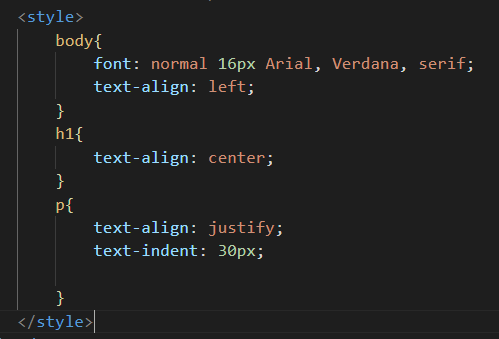

Tipos de Alinhamentos
- Para inserirmos alinhamentos nos textos, utilizamos a tag text-align.
- Para deixar o texto centralizado utilizamos text-align: center;.
- Para deixarmos o texto para esquerda utilizamos text-align: left;. e para direita text-align: right;.
- Normalmente para textos deixamos as frases no modo justificado, neste caso utilizamos a tag text-align: justify;.
Para identarmos um texto, ou seja, para que ele inicie um pouco na frente, como se fosse um parágrafo, utilizamos a tag text-indent: 4px;.Onde o número de Pixels determina o nível da identação.
